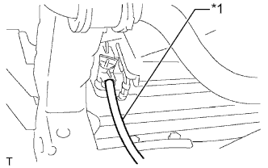
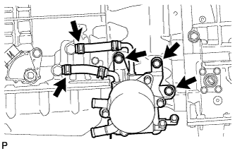

АВТОМАТИЧЕСКАЯ ТРАНСМИССИЯ В СБОРЕ (для моделей с 1GR-FE) > СНЯТИЕ |
| 1. ОТСОЕДИНИТЕ ПРОВОД ОТ ОТРИЦАТЕЛЬНОГО ВЫВОДА АККУМУЛЯТОРНОЙ БАТАРЕИ |
| 2. СНИМИТЕ ЗАЩИТУ КАРТЕРА ДВИГАТЕЛЯ № 1 В СБОРЕ |
Выверните 4 болта.
 |
Отсоедините защиту картера двигателя от кузова автомобиля, как показано на рисунке.
| 3. СНИМИТЕ ЗАДНЮЮ ЗАЩИТУ КАРТЕРА ДВИГАТЕЛЯ В СБОРЕ |
Выверните 4 болта и снимите заднюю защиту картера двигателя.
| 4. СНИМИТЕ УПЛОТНЕНИЕ ФАРТУКА ПРАВОГО ПЕРЕДНЕГО КРЫЛА |
Освободите 5 фиксаторов и снимите уплотнение фартука переднего крыла.
| 5. СНИМИТЕ УПЛОТНЕНИЕ № 1 МЕЖДУ ФАРТУКОМ ПРАВОГО ПЕРЕДНЕГО КРЫЛА И РАМОЙ |
Освободите 5 фиксаторов и снимите уплотнение между фартуком переднего крыла и рамой № 1.
| 6. СЛЕЙТЕ ЖИДКОСТЬ ДЛЯ АВТОМАТИЧЕСКОЙ ТРАНСМИССИИ |
Снимите пробку сливного отверстия и прокладку, и слейте трансмиссионную жидкость.
Установите новую прокладку и пробку сливного отверстия.
| 7. СЛЕЙТЕ ОХЛАЖДАЮЩУЮ ЖИДКОСТЬ ДВИГАТЕЛЯ (для моделей без масляного радиатора трансмиссии с воздушным охлаждением) |

| *1 | Пробка расширительного бачка | *2 | Пробка радиатора |
| *3 | Пробка сливного крана блока цилиндров | *4 | Пробка сливного крана радиатора |
|  |
Установите виниловый шланг со стороны радиатора.
| *1 | Виниловый шланг |
 |
Установите виниловый шланг со стороны двигателя.
| *1 | Виниловый шланг |
Ослабьте пробку сливного крана радиатора.
Снимите пробку радиатора и слейте охлаждающую жидкость.
Ослабьте пробку сливного крана блока цилиндров и слейте охлаждающую жидкость из двигателя.
| 8. СНИМИТЕ НИЖНИЙ ЗАЩИТНЫЙ КОЖУХ КАРТЕРА РАЗДАТОЧНОЙ КОРОБКИ |
Выверните 4 болта и снимите нижний защитный кожух картера раздаточной коробки.
| 9. СНИМИТЕ ПЕРЕДНИЙ КАРДАННЫЙ ВАЛ В СБОРЕ |
Снимите передний карданный вал (Нажмите здесь).
| 10. СНИМИТЕ КАРДАННЫЙ ВАЛ В СБОРЕ |
Снимите карданный вал (Нажмите здесь).
| 11. СНИМИТЕ ПЕРЕДНЮЮ ВЫПУСКНУЮ ТРУБУ В СБОРЕ |
Снимите приемную трубу в сборе (Нажмите здесь).
| 12. СНИМИТЕ ОПОРУ КОЛЛЕКТОРА |
Выверните 3 болта и снимите опору.
| 13. СНИМИТЕ ОПОРУ КОЛЛЕКТОРА № 2 |
Выверните 3 болта и снимите опору.
| 14. ОТСОЕДИНИТЕ ТРОС МЕХАНИЗМА ПЕРЕКЛЮЧЕНИЯ ПЕРЕДАЧ В СБОРЕ |
 |
Отверните гайку, освободите фиксатор и отсоедините трос механизма переключения передач от трансмиссии.
| 15. ОТСОЕДИНИТЕ ВПУСКНОЙ ПАТРУБОК МАСЛЯНОГО РАДИАТОРА № 1 И ВЫПУСКНОЙ ПАТРУБОК МАСЛЯНОГО РАДИАТОРА № 1 (для моделей с масляным радиатором трансмиссии с воздушным охлаждением) |
Выверните 2 болта, чтобы разомкнуть 2 зажима гибких шлангов № 2.
С помощью разрезной головки отсоедините впускной и выпускной патрубки от штуцеров патрубков масляного радиатора.
Выверните болт и снимите зажим гибкого шланга № 2 с кожуха трансмиссии.
| 16. СНИМИТЕ МАСЛЯНЫЙ РАДИАТОР ТРАНСМИССИИ В СБОРЕ (для моделей без масляного радиатора трансмиссии с воздушным охлаждением) |
Отсоедините 2 перепускных шланга охлаждающей жидкости от масляного радиатора трансмиссии, выверните 2 болта и отсоедините перепускной патрубок от автоматической трансмиссии.
 |
Отсоедините впускной патрубок масляного радиатора № 2 и выпускной патрубок масляного радиатора № 2 от термостата трансмиссионной жидкости.
|  |
Отсоедините впускной патрубок масляного радиатора № 1 и выпускной патрубок масляного радиатора № 1 от штуцеров патрубков масляного радиатора.
Выверните 3 болта и снимите масляный радиатор трансмиссии вместе с термостатом трансмиссионного масла.
| 17. ОТСОЕДИНИТЕ ВПУСКНОЙ ПАТРУБОК МАСЛЯНОГО РАДИАТОРА № 1 И ВЫПУСКНОЙ ПАТРУБОК МАСЛЯНОГО РАДИАТОРА № 1 (для моделей без масляного радиатора трансмиссии с воздушным охлаждением) |
 |
Выверните 2 болта и отсоедините 2 патрубка масляного радиатора.
| 18. СНИМИТЕ СТАРТЕР В СБОРЕ |
Снимите стартер (Нажмите здесь).
| 19. СНИМИТЕ УСТАНОВОЧНЫЙ БОЛТ МУФТЫ ГИДРОТРАНСФОРМАТОРА И ВЕДУЩЕГО ДИСКА |
Снимите боковую крышку картера маховика.
 |
Проверните коленчатый вал, чтобы обеспечить доступ к 6 болтам, и, удерживая ключом болт шкива коленчатого вала, выверните каждый из болтов.
| 20. ПОДДОМКРАТЬТЕ АВТОМАТИЧЕСКУЮ ТРАНСМИССИЮ В СБОРЕ |
Поддомкратьте трансмиссию телескопическим гидравлическим домкратом. Приподнимите трансмиссию над поперечиной.
| 21. СНИМИТЕ ЛЕВЫЙ И ПРАВЫЙ КРОНШТЕЙНЫ ЭЛЕМЕНТА ПЕРЕДНЕЙ ПОДВЕСКИ |
 |
Выверните 8 болтов и снимите левый и правый кронштейны элемента передней подвески.
| 22. СНИМИТЕ ПОПЕРЕЧИНУ РАМЫ № 3 В СБОРЕ |
Выверните 4 болта из подушки задней опоры двигателя.
 |
Отверните 4 гайки и снимите 4 болта и поперечину рамы.
| 23. СНИМИТЕ ЗАДНЮЮ ПОДУШКУ ОПОРЫ ДВИГАТЕЛЯ № 1 |
Выверните болт и снимите теплозащитный экран задней опоры двигателя.
Выверните 4 болта и снимите подушку задней опоры двигателя с трансмиссии.
| 24. ОТСОЕДИНИТЕ ЖГУТ ПРОВОДОВ И РАЗЪЕМ |
 |
Отверните гайку и отсоедините провод соединения с массой.
 |
Наклоните трансмиссию вниз.
Отсоедините разъем датчика положения паркинга/нейтрали, разъем жгута электропроводки трансмиссии, 2 разъема датчиков частоты вращения и боковой разъем системы управления раздаточной коробкой.
Освободите 2 зажима разъемов и 7 зажимов жгута проводов, а затем отсоедините жгут проводов.
| 25. ОТСОЕДИНИТЕ ШЛАНГ ПРОБКИ САПУНА |
Отсоедините 3 шланга пробки сапуна от двигателя.
| 26. СНИМИТЕ АВТОМАТИЧЕСКУЮ ТРАНСМИССИЮ В СБОРЕ |
Выверните 9 болтов и снимите трансмиссию.
| 27. СНИМИТЕ РАЗДАТОЧНУЮ КОРОБКУ В СБОРЕ |
Снимите раздаточную коробку (Нажмите здесь).
| 28. СНИМИТЕ КРОНШТЕЙН ТРОСА МЕХАНИЗМА ПЕРЕКЛЮЧЕНИЯ ПЕРЕДАЧ |
 |
Выверните 2 болта и снимите кронштейн троса механизма переключения.
| 29. СНИМИТЕ МУФТУ ГИДРОТРАНСФОРМАТОРА В СБОРЕ |
| 30. ПРОВЕРЬТЕ МУФТУ ГИДРОТРАНСФОРМАТОРА В СБОРЕ |
Проверьте муфту гидротрансформатора (Нажмите здесь).